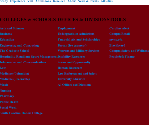
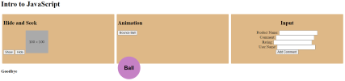

Assignments
Assignment 1 - Basic HTML
.jpg)
This assignments purpose was to practice creating a portal that would be a main hub to the othr assignments. As well as applied basic HTML coding with the proper code and style.
Assignment 2 - Basic CSS
.jpg)
This assignment was to get familar with CSS and explore the creative aspects of the website. We would practice a syncronus color sceme to make it appealing to others.
Assignment 3 - Page Layout
.jpg)
This assignments purpose is to familarize yourself with the adjuctments needed to be made when switching from different sizes of the website. Required to be fully organized the columns used in the website.
Assignment 5 - Recreate CSS Page
This assignments purpose was to copy the CSS format of the schools research page. This is to test our skills as we should be aple to copy the format of any website given to us.
Assignment 6 - JavaScript, Buttons, Functions and More.
This assignments purpose was to create a page similar to a diagram. By using a new language we learn new fundamental used in the websites design.
Assignment 7 - Conditionals
dkfjksjfkja